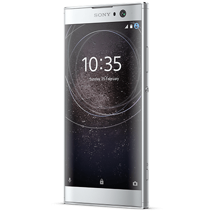
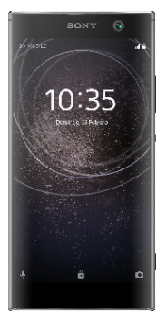
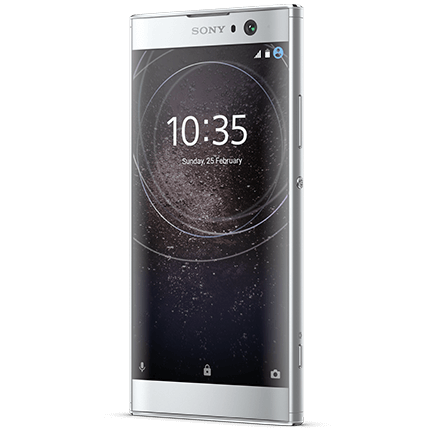
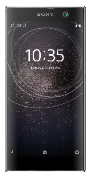

ESPICIFICACIONES
Diseño: ¿más vale bueno conocido?
Es inevitable no hablar del icónico diseño en este Xperia, más aún cuando la lucha por acabar con los marcos es una tendencia que llega a todas las marcas y todas las gamas. Sony mantiene al pie de la letra su Omnibalance en este terminal, diseño puramente rectangular, con la pantalla y la trasera completamente planas, y con unos marcos abrazando la pantalla que a día de hoy sorprenden. Es un teléfono de estructura unibody, con unos biseles algo más suaves que en el modelo anterior, pero de ángulos rectos y fácilmente reconociblemente como un "Xperia". Las dimensiones se mantienen casi idénticas respecto al XA1 (142 x 70 x 9,7 milímetros), pero la pantalla crece hasta las 5,2 pulgadas, lo que hace que los marcos superior e inferior disminuyan, y el porcentaje de ocupación del frontal ascienda hasta el 75% (frente al 70,9% del XA1). El marco superior sirve como alojamiento para la cámara frontal y su correspondiente flash, mientras que el inferior se queda como un elemento huérfano, ya que no hay botones físicos, sino los tres clásicos capacitivos en el margen inferior de la pantalla. El material principal que compone el cuerpo unibody del Xperia XA2 es el aluminio anodizado, con un acabado completamente mate y que además de resistir los arañazos con tesón, permite un agarre cómodo y libre de resbalones inesperados. Respecto al reparto de botones alrededor del terminal tenemos, en el lateral derecho, los botones de volumen e inicio, ambos con el mismo acabado mate que el resto del cuerpo, lo que hace que se integren a la perfección con el resto de la construcción. El marco superior sirve como alojamiento para la cámara frontal y su correspondiente flash, mientras que el inferior se queda como un elemento huérfano, ya que no hay botones físicos, sino los tres clásicos capacitivos en el margen inferior de la pantalla. El material principal que compone el cuerpo unibody del Xperia XA2 es el aluminio anodizado, con un acabado completamente mate y que además de resistir los arañazos con tesón, permite un agarre cómodo y libre de resbalones inesperados. Respecto al reparto de botones alrededor del terminal tenemos, en el lateral derecho, los botones de volumen e inicio, ambos con el mismo acabado mate que el resto del cuerpo, lo que hace que se integren a la perfección con el resto de la construcción. Sobre la ergonomía y las sensaciones en el día a día, nos encontramos con un terminal de dimensiones más o menos ajustadas dentro de las 5,2 pulgadas, pero que se siente bastante pesado en mano. ¿El motivo? Un aumento de peso de casi 30 gramos respecto al modelo anterior, debido a la correspondiente subida de amperaje de la batería. A continuación podemos comparar el peso del XA2 en relación a terminales de tamaño y baterías similares:
Pantalla: además de brillar hay que ser rápido
El Xperia XA2 llega con una pantalla IPS de 5,2 pulgadas con resolución FullHD, con una densidad de 424 píxeles por pulgada. Además alcanza un brillo máximo de 500 nits, que junto con las opciones de personalización del fabricante, deberían ser más que suficiente para darnos una buena experiencia de visualización. Así que tal y como esperábamos, el nivel de brillo máximo nos ha permitido ofrecido una visualización correcta, incluso en las horas del día con el sol más alto. La experiencia también se ha visto reforzada positivamente gracias a la posibilidad de ajustar el nivel de contraste, temperatura del blanco y colores a nuestro gusto, aunque por contra tenemos que apuntar que el ajuste de brillo automático no se ha portado todo lo bien que nos hubiera gustado.
Pantalla: además de brillar hay que ser rápido
El Xperia XA2 llega con una pantalla IPS de 5,2 pulgadas con resolución FullHD, con una densidad de 424 píxeles por pulgada. Además alcanza un brillo máximo de 500 nits, que junto con las opciones de personalización del fabricante, deberían ser más que suficiente para darnos una buena experiencia de visualización. Así que tal y como esperábamos, el nivel de brillo máximo nos ha permitido ofrecido una visualización correcta, incluso en las horas del día con el sol más alto. La experiencia también se ha visto reforzada positivamente gracias a la posibilidad de ajustar el nivel de contraste, temperatura del blanco y colores a nuestro gusto, aunque por contra tenemos que apuntar que el ajuste de brillo automático no se ha portado todo lo bien que nos hubiera gustado. Dejando a un lado los test de rendimiento, vamos a hablar de cómo se ha comportado el terminal entre nuestras manos durante el día a día. Del Snapdragon 630 que incorpora el XA2 esperábamos, como de la mayoría de procesadores de gama media que hay en el mercado actual, una experiencia de uso buena en escenarios poco exigentes, y así ha sido. El teléfono ha sido capaz de resolver cualquier tarea común, como llamadas, mensajería instantánea o navegación web con total eficiencia. Pero, ¿qué pasa cuando subimos el nivel de exigencia? Pues tanto en multitarea como ejecutando juegos que requieren de un nivel alto de recursos, como Asphalt 8, ha conseguido desenvolverse sin apenas lag ni caídas de fps, no al 100% en todas las situaciones, pero sí en la mayoría de los casos.